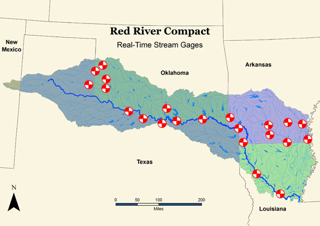

Texas Water District Finds Few Friends in Quest for Water in Oklahoma
An interstate water rights case to be argued in the U.S. Supreme Court this week has national implications.
Circle of Blue
On April 23, lawyers for one of the largest water districts in Texas will stand before the United States Supreme Court and argue that water in Oklahoma rightfully belongs to the state of Texas.
'[The Supreme Court’s judgement] stands to shape the future of some of the most rapidly growing sections of the American West and Southeast, as well as, possibly, America’s prospects for energy independence.'
At the heart of the lawsuit is whether the language of the Red River Compact — signed in 1978 by the basin states of Arkansas, Louisiana, Oklahoma, and Texas, and ratified two years later by Congress — gives entities in Texas the right to water that originates in a particular river basin in Oklahoma.
The lawyers for Tarrant Regional Water District, which serves 1.7 million people in the Fort Worth area, will claim that the stakes are much larger than one watershed.There are 26 interstate water compacts in the United States, and these legal agreements govern water supplies for many of the nation’s fastest-growing and most water-scarce regions.The Supreme Court’s judgment, Tarrant’s lawyers say, 'stands to shape the future of some of the most rapidly growing sections of the American West and Southeast, as well as, possibly, America’s prospects for energy independence.'
Tarrant’s legal team argues that if the Supreme Court upholds the federal appeals court ruling, which supported Oklahoma’s restrictions on out-of-state water sales, the justices would throw existing water compacts into chaos and would encourage protectionist policies from states wanting to guard water resources on their soil.
The problem is that almost no one outside of Texas shares that view.
In 2004, the Oklahoma Water Resources Board amended a moratorium that the state had in place on water sales to outside buyers — the board extended the moratorium until 2009, giving the state time to complete a study of its water resources, which it did in 2011.
The Texas water plan, published last year, reckons that that the lone star state’s demand for water will increase 22 percent by 2060, largely due to the 82 percent rise in population over the next half century, from of 26 million to 46 million Texans.
But in 2007, the Tarrant Regional Water District Tarrant had applied for a permit to divert 382 million cubic meters (310,000 acre-feet) per year from a tributary of the Red River, and Tarrant then sued the Oklahoma board over its water restrictions.Wayne Owen, Tarrant’s planning director, told Circle of Blue that Tarrant had its eye on water resources across the border because they were the most cost-effective option for new supplies that would be needed after 2030.
As the lawsuit meandered through the courts over the next few years, Oklahoma’s then-Governor Brad Henry (D) signed a law in June 2009 that required the state legislature to approve any out-of-state water sale.Tarrant claims that these restrictions are a violation of the U.S. Constitution’s Commerce Clause because they discriminate against certain buyers.But the Tenth Circuit Court of Appeals ruled in September 2011 that the Red River Compact allows states to discriminate because the compact sets water allocations.
Robert Glennon, a University of Arizona law professor, told Circle of Blue that, when Congress ratifies an interstate water compact, it essentially sanctions the restrictions that the states impose.But if that is a given, then the Tarrant team argues that the compact’s allocations would still give Texas certain rights to water that its neighbor is impeding.
At issue is a particular patch of water in Oklahoma, called ‘sub-basin 5’ in the compact.According to the compact, the water from this sub-basin is to be divided equally among the four states.The compact reads: 'The Signatory States shall have equal rights to the use of runoff originating in sub-basin 5 and undesignated water flowing into sub-basin 5, so long as the flow of the Red River at the Arkansas-Louisiana border is 3,000 cubic feet [85 cubic meters] per second or more, provided that no state is entitled to more than 25 percent of the water in excess of 3,000 cubic feet [85 cubic meters] per second.'
'Once you enter a compact, [you can’t] pass a state law to override it: that creates too much uncertainty for users.'
Tarrant sees this unambiguously — Texas can claim one-quarter of the water in this sub-basin, even though the water is in another state.
'A compact, by definition, is a compromise in which a state waives claims to sovereignty in some cases,' Tim Bishop told Circle of Blue.Bishop is an attorney at Mayer Brown and is the lead counsel for Tarrant.'It can’t be the case that, once you enter a compact, you can pass a state law to override it: that creates too much uncertainty for users.'
In its September 2011 decision, however, the Tenth Circuit Court interpreted the matter to mean that states could use one-quarter of the flow from a basin within the state, but that a state could not divert this water across borders.The ruling was welcomed in Oklahoma.
'We successfully defended Oklahoma’s right to protect its natural resources at the district court and circuit court of appeals, and we will continue that fight at the Supreme Court,' said Oklahoma Attorney General Scott Pruitt in a statement to Circle of Blue.
Tarrant has not found much sympathy in this case.Nearly all of the amicus briefs — filings from parties interested in the outcome but not directly involved — have sided with Oklahoma.
Arkansas and Louisiana, the two other states bound by the Red River Compact, filed on behalf of Oklahoma, as did a group of water law professors and a pair of water districts in Colorado that draw from interstate rivers.Even states that are part of other interstate compacts — a diverse group including Colorado, Idaho, Indiana, Michigan, Nevada, New Mexico, and Utah — share Oklahoma’s position.
Seemingly the only groups supporting Tarrant are Texas-based organizations and the city of Hugo, Oklahoma, which would like to sell water to Texas.The U.S. Solicitor General also backs Texas.
Mark Davis, director of the Tulane Institute on Water Resources Law and Policy in New Orleans, told Circle of Blue that this case is mostly a compact issue and is not about the Commerce Clause.
'If you have water, you read the compact one way.If you don’t, you read it another,' said Davis, who co-signed an amicus brief supporting the Tenth Circuit’s ruling in favor of Oklahoma.'The fact that Texas has a growing need for water means it’s going to read as many rights into the compact as it can.'
Arkansas and Louisiana, in their amicus brief, wrote that the provision about the equal rights in sub-basin 5 'simply does not constitute a clear expression by the signatory states or Congress that this one phrase was added for the purpose of overriding the regulatory authority of the States over intrastate waters that was otherwise maintained throughout the Compact.'
The compact also makes clear that the states have the power to regulate water within their boundaries.And Arkansas and Louisiana — two wet states that use riparian law that differs from the rights-based system in the American West — have different legal traditions for water than their fellow Red River states.
When asked about if the Supreme Court were to reverse the Tenth Circuit decision, Davis said, 'To upend all that is a pretty aggressive reading.'
The only opinions that matter, however, are those of the nine black-robed justices.The court is expected to issue its ruling in June.
Posted On: 2013-04-22T00:00:00
Posted By: Brett Walton

Content Date: 2013-04-22
Download Date: 2021-05-13
Document ID: L0C04BTT1